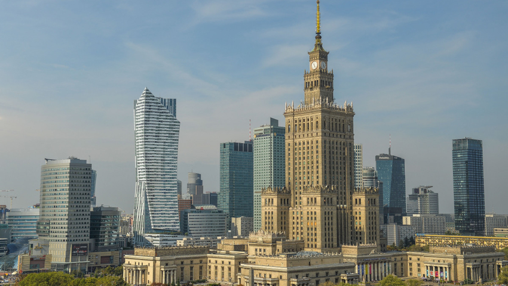
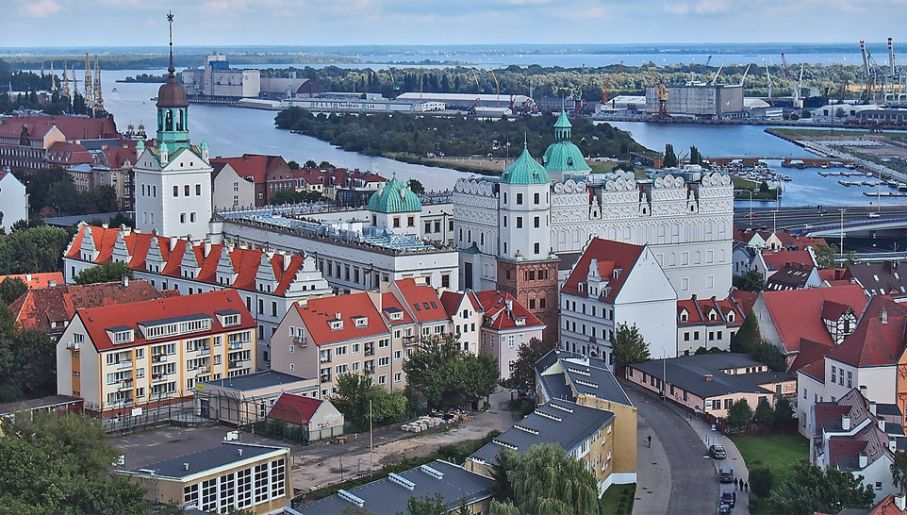
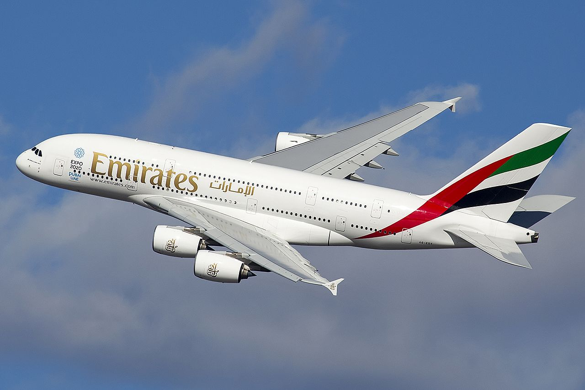

Miasto początkowe: Warszawa (pogoda)

Miasto docelowe: Szczecin (pogoda)

Czas lotu: 1h
Samolot Airbus A380
The Airbus A380 is the world's largest passenger airliner, a wide-body aircraft manufactured by Airbus. Airbus studies started in 1988 and the project was announced in 1990 to challenge the dominance of the Boeing 747 in the long haul market. The A3XX project was presented in 1994; Airbus launched the €9.5 billion ($10.7 billion) A380 programme on 19 December 2000. The first prototype was unveiled in Toulouse on 18 January 2005, with its first flight on 27 April 2005. Difficulties in electrical wiring caused a two-year delay and the development cost ballooned to €18 billion. It obtained its EASA and FAA type certificates on 12 December 2006.
Lista pasażerów: